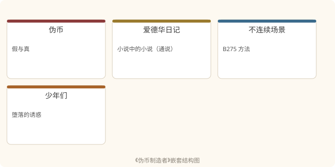

伪币制造者
一、基本信息
| 作者 | 安德烈·纪德 |
|---|---|
| 成书/出版 | 1926年（作者页B275口径：Les Faux-Monnayeurs (1926; The Counterfeiters)——'his only novel'） Andre Gide — Encyclopaedia Britannica（百科全书） |
| 国别/地区 | 法国 |
| 时代 | 现当代 · 20世纪 |
| 体裁 | 长篇小说 |
| 语言 | 法语 |

《伪币制造者》嵌套结构图（主题·结构图）
二、创作背景
作者页（B275）：纪德 major_works 载'伪币制造者'（B275 作者页定位，详见 yinduzhixing 条核对）。
Britannica（B275）：'Gide called his next work, Les Faux-Monnayeurs (1926; The Counterfeiters), his only novel'；'the most complex and intricately constructed of his works'；'told through discontinuous scenes'。
作者（B275）：1947年诺奖。
三、内容脉络
中学生贝尔纳与'伪币'：假币与假情的巴黎（通说待核）。
'小说中的小说'：爱德华的日记（通说待核）。
四、主要人物表
| 人物 | 身份 | 说明 |
|---|---|---|
| 爱德华 | 作家 | 日记体嵌套（通说待核） |
| 贝尔纳 | 中学生 | （通说待核） |
五、主题与艺术特点
- '伪币'：假与真的哲学（通说待核）。
- 不连续场景（B275）。
- '唯一小说'的自认（B275）。
六、影响与评论
- Britannica：'the most complex and intricately constructed of his works'（B275）。
Andre Gide — Encyclopaedia Britannica（百科全书） - Britannica：1947年诺奖（B275 作者级）。
Andre Gide — Encyclopaedia Britannica（百科全书）
七、阅读建议
难点
- 嵌套结构。
- 多人物。
- 《伪币制造者》（人民文学出版社/上海译文版本，通说待核）。
- 法文原版（Gallimard）。
先《背德者》《窄门》后本作。
八、待核实
- 1926年出版（Gallimard/NRF说）核对。
- 爱德华/贝尔纳人名核对。
- '唯一小说'的自称与评论界立场待核。